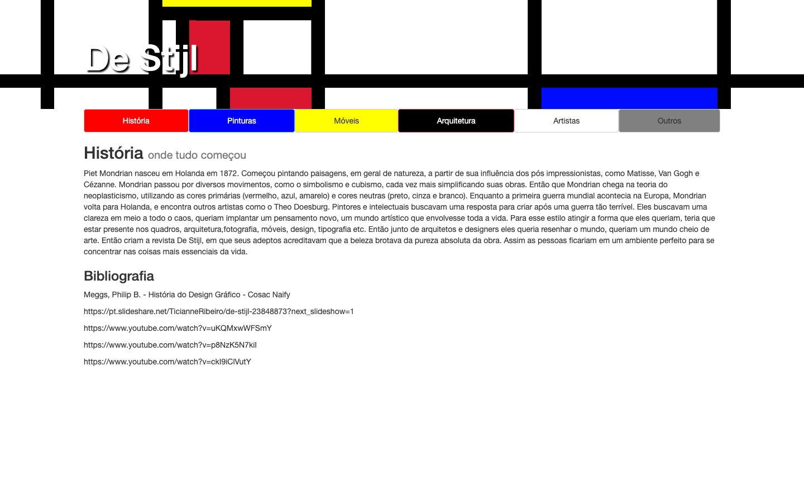

References / Website / 156
De Stijl student site on Neocities
A small Portuguese-language site about the movement whose header is itself a Mondrian-like composition of thick black bars and red, yellow, and blue planes.
- Source
- destijl.neocities.org
- Style
- De Stijl (agent-proposed, not yet reviewed by a person)
- Moods
- Didactic, orthogonal, naive
- Evidence
- Captured with
tools/capture.mjs(headless Chrome, 1440 × 900) on 28 September 2026 and inspected. The screenshot shows the first viewport; the measurement covers up to four screens. The page is 15 px wider than the viewport. - Reviewed
- Rights
- Third-party work, stored with credit for commentary. License: unverified. Rights policy
Observed
- The header is a white field divided by thick black vertical bars and one thick black horizontal bar that runs the full width of the page.
- Some cells are filled with flat red, yellow, and blue; a blue plane sits at the far right, red and yellow planes at the left.
- The title “De Stijl” is set in white sans-serif with a dark drop shadow over the composition.
- Six navigation tabs sit in a row, filled red, blue, yellow, black, white, and gray, with small rounded corners.
- Below, the heading “História” and a paragraph about Mondrian and the journal are set in gray Helvetica on white, followed by a bibliography.
Why it belongs
The header uses the style’s grammar directly: lines as solid bars, planes in the three primaries, and asymmetric placement. The rest of the page is a default text layout.
The black bars are drawn as filled boxes, not CSS borders, so surface.border.medianWidth measures 1 px although the visible lines are about 24 px thick. The tabs have a 4 px radius, which gives a round share of 0.86 among only 7 measured boxes. No heading is in capitals (uppercase share 0).
Borrow
Draw the grid lines as solid black bars that run past the content edge, and fill only two or three cells with primaries.
Color the navigation items with the palette itself: one primary or non-color per item.
Measured
Machine-extracted by tools/extract-traits.js on . Full measurement.
- Type families
- Helvetica Neue (100%)
- Type scale ratio
- 1.34
- Median radius
- 4 px
- Mean chroma
- 0.02
- Palette
- #ffffff 77%
- #333333 19%
- #808080 1%
- #0000ff 1%
- #ff0000 1%
- #ffff00 1%
- #000000 1%

